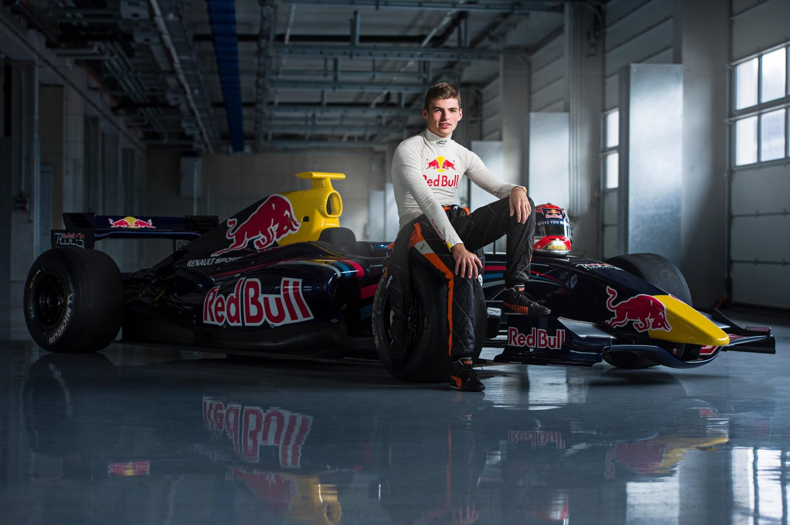

Home
Resumo
Formula 1
Karting
Títulos
Resumo
Quem é Max Verstappen?
Nascido na Bélgica, Max Verstappen vem de uma família de pilotos: seu pai, Jos Verstappen, disputou oito temporadas de Fórmula 1 pelas equipes Benetton, Simtek, Footwork, Tyrrell, Stewart, Arrows e Minardi; sua mãe, Sophie-Marie Kumpen, correu de kart; Paul Kumpen, seu avô, competiu em provas de endurance, e seu tio Anthony Kunpen participou de corridas do FIA GT e nas 24 Horas de Le Mans.
Disputou uma corrida de kart pela primeira vez aos 4 anos. Até 2012, tornou-se um dos principais competidores da modalidade. Sua ascensão para os monopostos foi em outubro de 2013, pouco depois de Max completar 16 anos. Pilotou um carro da Manor Motorsport no circuito de Pembrey, dando 160 voltas.
Em seguida, fez mais um teste, agora com um Dallara F311 da Motopark Academy, no circuito de Jerez. Em janeiro de 2014, foi confirmada sua participação na Florida Winter Series. Pouco depois, assinou com a Van Amersfoort Racing para disputar a Fórmula 3. Em julho, correu o Masters de Fórmula 3 pela Motopark.
Época de Karting
Aos dois anos de idade, Verstappen dirigia moto quatros pelo jardim da família. Alguns anos depois de um incidente envolvendo uma de suas motos, os pais levaram-no para a pista de kart perto de sua casa em Genk.
Aos quatro anos, ele viu um amigo mais novo andando de kart e perguntou ao pai se ele poderia ter um kart. O pai de Verstappen comprou-lhe um kart quando ele tinha quatro anos e meio.
Verstappen venceu sua primeira corrida, aos sete anos, contra jovens pilotos que tinham onze anos. Aos nove anos foi campeão na Bélgica e na Holanda.
Para apoiar a carreira de piloto de Max, o piloto da Arrows F1,
Jos Verstappen
, se aposentou da Fórmula 1 e voltou suas atenções exclusivamente para seu filho.
Como e quando Max Verstappen começou na Fórmula 1?

O início da carreira na Fórmula 1 para Max Verstappem, iniciou-se em 2015, com apenas 17 anos de idade. A sua carreira foi breve na equipa secundrária da Red Bull - Scuderia Toro Rosso - e rapidamente foi chamado à equipa principal.
Resultados Alcançados
Temporada
Campeonato
Equipa
Provas
Pontos
Classificação
2015
F1
Toro Rosso
19
49
12º
2016
F1
Red Bull
17
204
5º
2017
F1
Red Bull
20
168
6º
2018
F1
Red Bull
21
249
4º
2019
F1
Red Bull
21
278
3º
2020
F1
Red Bull
17
214
3º
2021
F1
Red Bull
22
395.5
1º